Viewer - Export to Nifti with options - Set default IRM locations - Use of ImageJ
This section explains how to use MRI File Manager
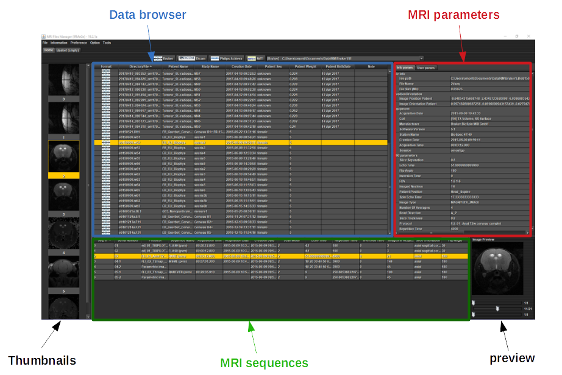Click on one of the buttons 'Bruker', 'Dicom', 'Philips' or 'Nifti' to choose the data folder 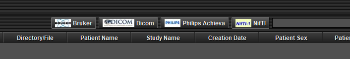 (preview)
A dialog box opens and you have to choose the root directory containing the data IRM. 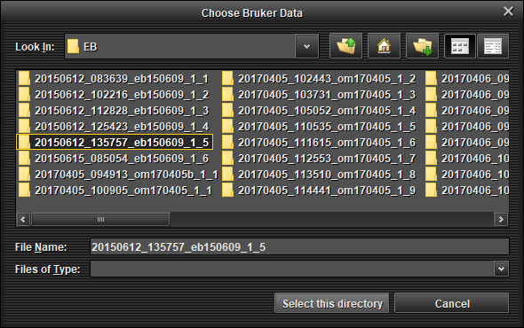 (preview)
A list of data appears in 'data browser' table.
Select a data in 'data browser' table (only one mouse click), a list of MRI sequences appears in the table below and image thumbnails are shown on the left.
For each selected sequence, MRI parameters and image preview are displayed.
If you double-click on a sequence, the image opens with the ImageJ interface (you can open several images at once).
This section explains how to convert data to Nifti-1 (file by file or all data).
Go to the 'File -> export -> Option export' menu.
A window 'Options export' appears
In the 'Repertory naming' tab, choose the naming of repertories 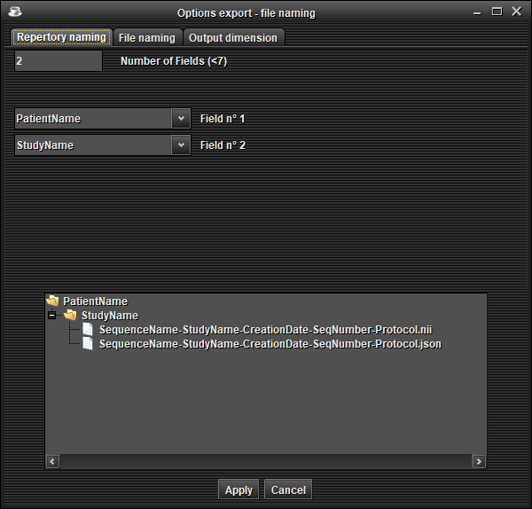 (preview)
In the 'File naming' tab, choose the naming of files 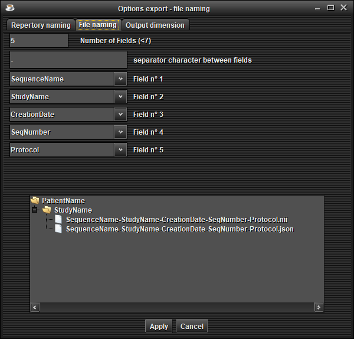 (preview)
Click on 'Apply' button. Your configuration is saved for the next use of the software.
File by file without anonymization :
Select one or several sequences in the table at the bottom (Ctrl + mouse left click), open a pop-up menu by clicking the right mouse button and choose 'Add to basket' 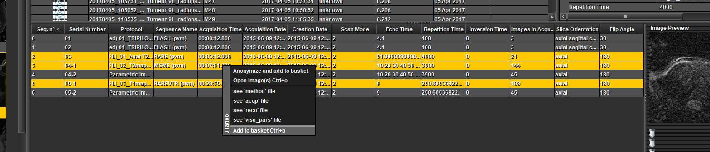 (preview)
File by file with anonymization :
Select one or several sequences in the table at the bottom (Ctrl + mouse left click), open a pop-up menu by clicking the right mouse button and choose 'Anonymize and add to basket' 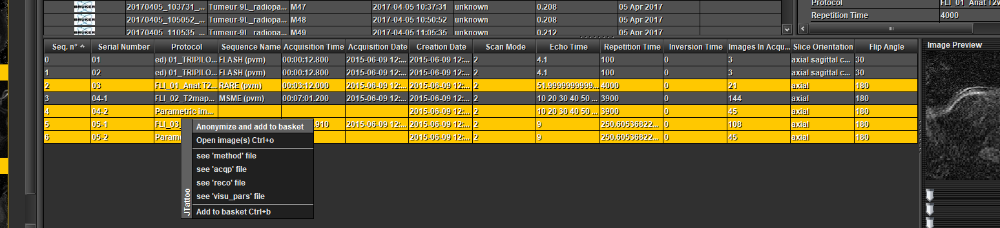 (preview)
An anonymization window appears, modify the fields and 'Ok' 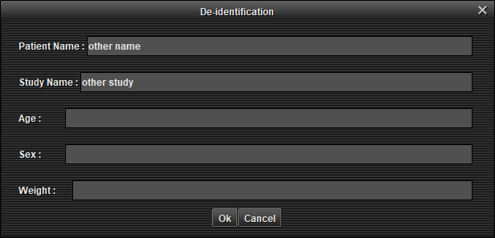 (preview)
Full data without anonymization :
Select one or several data in the table at the top (Ctrl + mouse left click), open a pop-up menu by clicking the right mouse button and choose 'add all sequences to basket' 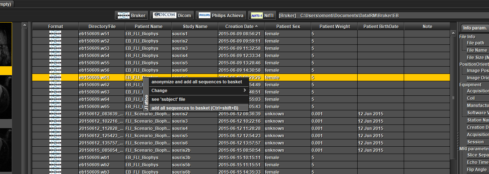 (preview)
Full data with anonymization :
Select one or several data in the table at the top (Ctrl + mouse left click), open a pop-up menu by clicking the right mouse button and choose 'anonymize and add all sequences to basket' 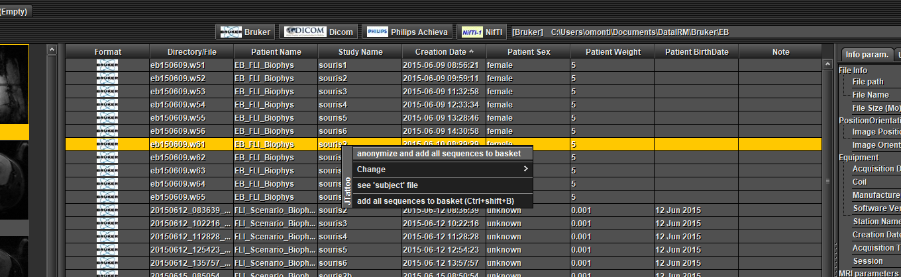 (preview)
An anonymization window appears, modify the fields and click 'Ok' (preview)
if the 'Exportation Folder' field is empty, click on 'Change' to choose the folder where you want to export your data.
Click on 'Export to Nifti-1'
At the end of the export, a dialog box informs you if the export is a success or a failure.
This section explains how to define the default data folder for each format.
Go to the 'Option -> Current working directory' menu
A dialog box appears 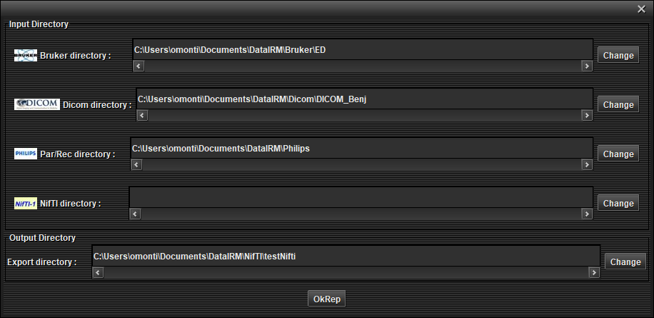 (preview)
For each format, choose the data folder by default.
Click on 'Ok rep' button. Your configuration is saved for the next use of the software.
This section explains how to use ImageJ tools and his plugins.